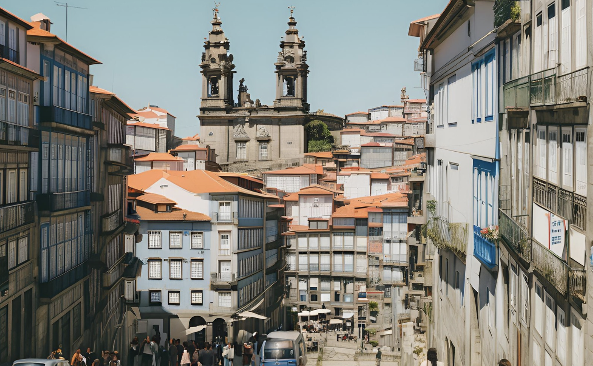
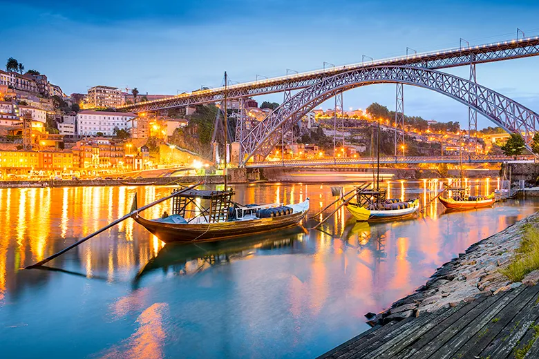

Porto
O Porto, segunda maior cidade de Portugal, é um destino que combina tradição e modernidade de forma única. Localizada à beira do Rio Douro, a cidade é famosa pelo seu vinho do Porto, pela sua arquitetura histórica e pelas suas ruas pitorescas. O Porto oferece aos visitantes uma grande variedade de atrações, como a Ribeira, o Mercado do Bolhão, a Livraria Lello e a Igreja de São Francisco. A cidade é também conhecida pela sua gastronomia, especialmente pratos como a francesinha e o bacalhau à Gomes de Sá, que conquistam qualquer apreciador de boa comida.


Vantagens
- Cidade histórica com muitos monumentos e áreas património mundial.
- Famoso vinho do Porto, com várias adegas para visitação e degustação.
- Ambiente acolhedor e vibrante, com ruas cheias de vida e cultura local.
- Transportes públicos eficientes e o acesso fácil ao Rio Douro.
Desvantagens
- Algumas áreas turísticas podem estar bastante lotadas.
- O clima pode ser instável, com chuvas frequentes durante o outono e inverno.
- Ruas são íngremes, o que pode ser desafiador para mobilidade reduzida.
- O trânsito pode ser complicado, especialmente nas zonas mais centrais.